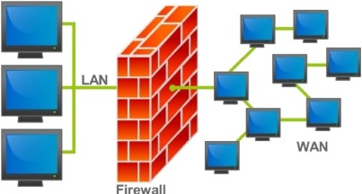
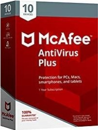
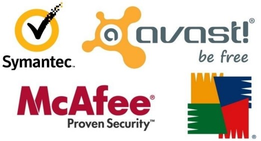

Most PC systems include basic security tools. These can be replaced or supplemented, but should be used immediately. Connecting a PC to the Internet will lead to attacks very quickly, often within seconds. Using the tools below and following the suggestions will give you a reasonable chance of avoiding, catching or blocking, and removing most of the malware discussed in the last module.
Obviously avoidance is best. Re-read the quick tips in the sidebar above.
A firewall is a device or set of devices designed to permit or deny network transmissions based upon a set of rules and is frequently used to protect networks from unauthorized access while permitting legitimate communications to pass.
Note that illegitimate outgoing communications can also be blocked. Many personal computer operating systems include software-based firewalls to protect against threats from the public Internet. Many routers that pass data between networks contain a firewall also. (You probably have a wireless router in your home.)
Without proper configuration, a firewall can often become worthless. Standard security practices dictate a "default-deny" firewall ruleset, in which the only network connections which are allowed are the ones that have been explicitly allowed.
Unfortunately, such a configuration requires detailed understanding of the network applications and endpoints required for the organization's day-to-day operation. Many businesses lack such understanding, and therefore implement a "default-allow" ruleset, in which all traffic is allowed unless it has been specifically blocked. This configuration makes inadvertent network connections and system compromise much more likely.

Antivirus (AV) or anti-virus software is used to prevent, detect, and remove malware, including but not limited to computer viruses, computer worms, Trojan horses, spyware and adware. Most AV programs provide on-access scans of any program that you run or download for install. Some extend this to your email as well.
A variety of strategies are typically employed. Signature-based detection involves searching for known patterns of data within executable code. However, it is possible for a computer to be infected with new malware for which no signature is yet known. To counter such so-called zero-day threats, heuristics can be used. One type of heuristic approach, generic signatures, can identify new viruses or variants of existing viruses by looking for known malicious code, or slight variations of such code, in files. Some antivirus software can also predict what a file will do by running it in a sandbox and analyzing what it does to see if it performs any malicious actions.
No matter how useful antivirus software can be, it can sometimes have drawbacks. Antivirus software can impair a computer's performance. (This is why some Smartphone and Mac users choose not to run AV software.) If the antivirus software employs heuristic detection, success depends on achieving the right balance between false positives and false negatives. (A false positive means that useful, safe software will be flagged as dangerous.) Finally, antivirus software generally runs at the highly trusted kernel level of the operating system, creating a potential avenue of attack.
Although most antivirus programs claim to detect and remove spyware and adware, they are sometimes not as good at this as software intended specifically for this task. This is at least partly due to the controversy over what exactly qualifies as spyware and adware (discussed in the last module). Many experts recommend that you use multiple software defenses, although the second or third are usually employed as manually run scans (not on-access).
There are a number of AV packages available and they are sold (or distributed for free) in various suites, that is with differing components, for example, Norton Antivirus with Antispyware, Norton Internet Security, and Norton 360 All-In-One Security, all by Symantec. Comments here are general. You should refer to the software web site (and Google it) for more information.
Norton and McAfee are well-known suites of protection tools. They have the advantage of a large company's quick reaction to new threats but the disadvantage of using a lot of system resources itself. MacAfee Enterprise Edition is for businesses.
At SRU, any student or employee can get a copy of this version for their laptop or home computer for free. Webroot, Kaspersky, and Bit defender are all rated well in the review linked above. Avg is a well-respected AV package. A free version is available for 30 days. Malware bytes provides a free version, although the free version does not provide on-access scans. At SRU, I have used this in conjunction with McAfee Enterprise successfully.
As Louis Binstock said, "we are our own worst enemy". Not only do we delete the file we need, fail to keep a copy before editing, ignore updates, spill coffee on the system, or drop a laptop, we are also responsible for installing most of the programs that harm our computer systems. Sometimes this is explicitly downloading a program containing adware or spyware, other times it is because we are using an account that has administrator privileges. The former may be a choice, the latter certainly is, and a poor one at that.
In the early days of personal computing, a PC didn't have accounts. There was a single user that both used and administered the machine. This has evolved to systems that allow the creation of user accounts with various privileges, that are protected from one another, and that have a separate administrative account. All of these steps match what was done on multi-user operating systems used in IT departments (and as servers) many years before. Unfortunately, most PC users simply use the administrator account. Create and use a "normal" account. Only use administrator privileges when needed.
It is a fair assumption that everyone has lost a file they needed. Often it is not lost to malware, but either hardware failure or our own failure to backup files. There are tools that will assist you in making backups, or you can manually copy your data to another drive. The advantage to manual backup is that it is fast. The disadvantage is that it is not scheduled. It is not automatic. Whatever the cause of the loss may be, it represents time and effort. Make a backup plan and stick to it.
There are online services for backing up your files. These services run a program that is scheduled to automatically backup your files (while you sleep). They have an additional advantage of offering off-site backup. A second hard drive in your computer is also vulnerable to malware and an external drive, even when not connected, is susceptible to theft or fire. The biggest disadvantage of such a service is that you are trusting a third party with your data: work, pictures, saved email, etc. Make sure they encrypt your data to stop casual perusal by employees and theft by others. But, remember that they may have the encryption key. Restore points are a type of backup for the system itself. Create a restore point before installing software, partitioning a drive, etc.
Authentication refers to the process of making sure a user has access to the resource, usually the entire system; that is, logging on. If you are using accounts, as recommended above, you can also protect your files from other users. They can be given permission to change (delete), read, or denied access. When you attempt to access a resource you do not have permission for, or install a program, you are generally prompted to give permission (and authenticated). You may have to log in as an administrator to accomplish some tasks - then switch back to your user account.
Standard authentication is accomplished with a password. Password that is hard to guess: 8-12 (or more) characters and including non-alphabetical characters that you can remember. Random would be great, if you have that kind of memory. Otherwise consider modifying a phrase that is meaningful to you (ignore any spaces). For example, your favorite dog is named Princess (and she has paws):
PrinceSaysPause - WEAK, uses caps, but uses all dictionary words
PrintSezPauzz - better, but all letters
Pr1n5essP0z - good, three digits (the 1 is read as an I, 5 is an S, and 0 an O)
Pr1nse55-P0z - very good, 4 digits and hyphen
Pr1nse55-P0z@@ - excellent, 14 characters long with digits, caps and "special" chars (Are those last two her paws or eyes?)
Don't forget that Princess "barqs", "jumpz", and "cud.del5" also. It's kind of endless, which is the point. If you choose to substitute digits or punctuation for letters like above (@b0v3), make sure you also "mis-spell" the word (phonetically). You can also mix and match the above with simple substitution ciphers (A becomes B, B becomes C, etc.), so "Princess paws" becomes "pr1nse55-qbxt".
You also need to manage your passwords. Change them regularly; once a semester is good rule for college students. Chances are someone else knows one of them. When your relationship ends, change your passwords - it's like changing the locks, only easier. (Do you really want them reading your email?)
Don't forget that many passwords are saved on PCs, laptops and Smartphone, including banking or online trading passwords. Secure the device first. Your Smartphone almost certainly has an authentication mechanism. Use it! It also keeps rude friends and significant others from perusing your texts, emails, and photos. Change all passwords if a device is lost or stolen.
Shoulder surfing refers to obtaining someone's password (or PIN) through direct observation. You should not feel uncomfortable asking someone to "excuse you" while you type a password - and wait for them to comply.
Assume your PC (and online backup service) will eventually get hacked. Why not save your files in a way that prevents others from accessing them. Encryption packages are available (some are free) that will create a "container" file that appears like another disk drive to your system. Anything saved on that drive is actually saved in the encrypted container. (You do have to start this up before using it and make sure you close it down when done.) This is a must if you are using business files at home, working with healthcare information, or student grades. You can purchase flash drives that will protect your data also. They have the encryption software on them. (Kingston has been a leader.)
Note that if you encrypt a file or create an "encrypted volume" - a big file that acts like a separate encrypted disk - you can back that up on an encrypted cloud service. It will be encrypted twice and be that much harder to hack.
There are a number of things you can do to speed up your PC, but the most effective is likely to be removing spyware and adware that you installed yourself. In addition, you will find that there are a number of programs that are running all the time, so they can "start" quickly when you select them. Scan for viruses, spyware and adware first. Remove whatever you can - some of the spyware and adware might be there because you want the program it came with. Most of the rest of this is for Windows, but I put in some links for OS X.
Uninstall programs you no longer use with the uninstall utility (Windows-Control_Panel:_Add_or_remove_programs). For the Mac, some files can simply be dragged to the Trash, but "bundles" are more complicated: search for Uninstalling Applications in Mac OS Xon the web.
There are some system level things you can do, as well. Empty the trash bin to get rid of files you no longer need and run the disk clean up utility (Windows_Start:All_Programs:Accessories:System_Tools) to get rid of temporary internet files and other junk. Simply creating space on the hard disk will make it easier to place needed files in one contiguous location on the disk to speed up access. (No speed boost if you have an SSD drive, though.)
After cleaning up old files create a restore point and then defragment the hard disk (System Tools). This will optimize the location of files, again speeding up access. The more space you have available, the better this will work, so clean up first. (Not necessary with SSD drives and Apple says don't bother defragging in OS X - in support article 25668.)
Finally, if you access the Windows Systems Properties (Control_Panel:_System), under the Advanced tab, you will find System Performance. Select Performance Settings. Generally, Windows ships with "adjust for best appearance" selected. You can turn off features you don't care about, or all, by selecting "adjust for best performance”. The most common, and easiest, hardware solution is to add RAM.
If you've purchased a new system and set it up physically, there are still some things you should do before you start browsing the web. Primarily, you need to update all the software on your "new" system, as it may actually be months old, and install antivirus software (if it didn't come pre-installed).
This is also a great time to write down all the processes that show up in the Task Manager for later reference. You can do this on an old system after you get rid of unwanted programs also. This is great for later comparisons to find malware. You probably also have an old system to get rid of. Recycle! And make sure you shred (wipe) the disk to protect your privacy.
You can help prevent over heating by keeping the inside of the (desktop) PC clean & organized.
In computing, a device driver is a computer program that operates or controls a particular type of device that is attached to a computer. A driver provides a software interface to hardware devices, enabling operating systems and other computer programs to access hardware functions without needing to know precise details about the hardware being used.
A driver communicates with the device through the computer bus or communications subsystem to which the hardware connects. When a calling program invokes a routine in the driver, the driver issues commands to the device. Once the device sends data back to the driver, the driver may invoke routines in the original calling program. Drivers are hardware dependent and operating-system-specific. They usually provide the interrupt handling required for any necessary a synchronous time-dependent hardware interface.
The main purpose of device drivers is to provide abstraction by acting as a translator between a hardware device and the applications or operating systems that use it. Programmers can write higher-level application code independently of whatever specific hardware the end-user is using.
For example, a high-level application for interacting with a serial port may simply have two functions for "send data" and "receive data". At a lower level, a device driver implementing these functions would communicate to the particular serial port controller installed on a user's computer. The commands needed to control a 16550 UART are much different from the commands needed to control an FTDI serial port converter, but each hardware-specific device driver abstracts these details into the same (or similar) software interface.
Writing a device driver requires an in-depth understanding of how the hardware and the software works for a given platform function. Because drivers require low-level access to hardware functions in order to operate, drivers typically operate in a highly privileged environment and can cause system operational issues if something goes wrong. In contrast, most user-level software on modern operating systems can be stopped without greatly affecting the rest of the system. Even drivers executing in user mode can crash a system if the device is erroneously programmed. These factors make it more difficult and dangerous to diagnose problems.
The task of writing drivers thus usually falls to software engineers or computer engineers who work for hardware-development companies. This is because they have better information than most outsiders about the design of their hardware. Moreover, it was traditionally considered in the hardware manufacturer's interest to guarantee that their clients can use their hardware in an optimum way. Typically, the Logical Device Driver (LDD) is written by the operating system vendor, while the Physical Device Driver (PDD) is implemented by the device vendor. But in recent years non-vendors have written numerous device drivers, mainly for use with free and open source operating systems. In such cases, it is important that the hardware manufacturer provides information on how the device communicates. Although this information can instead be learned by reverse engineering, this is much more difficult with hardware than it is with software.
Microsoft has attempted to reduce system instability due to poorly written device drivers by creating a new framework for driver development, called Windows Driver Foundation (WDF). This includes User-Mode Driver Framework (UMDF) that encourages development of certain types of drivers—primarily those that implement a message-based protocol for communicating with their devices—as user-mode drivers. If such drivers malfunction, they do not cause system instability. The Kernel-Mode Driver Framework (KMDF) model continues to allow development of kernel-mode device drivers, but attempts to provide standard implementations of functions that are known to cause problems, including cancellation of I/O operations, power management, and plug and play device support.
Apple has an open-source framework for developing drivers on macOS called the I/O Kit.
In Linux environments, programmers can build device drivers as parts of the kernel, separately as loadable modules, or as user-mode drivers (for certain types of devices where kernel interfaces exist, such as for USB devices). Makedev includes a list of the devices in Linux: ttyS (terminal), lp (parallel port), HD (disk), loop, sound (these include mixer, sequencer, dsp, and audio).
The Microsoft Windows .sys files and Linux .ko modules contain loadable device drivers. The advantage of loadable device drivers is that they can be loaded only when necessary and then unloaded, thus saving kernel memory.
Device drivers, particularly on modern Microsoft Windows platforms, can run in kernel-mode (Ring 0 on x86 CPUs) or in user-mode (Ring 3 on x86 CPUs). The primary benefit of running a driver in user mode is improved stability, since a poorly written user mode device driver cannot crash the system by overwriting kernel memory.
On the other hand, user/kernel-mode transitions usually impose a considerable performance overhead, thereby prohibiting user-mode drivers for low latency and high throughput requirements.
Kernel space can be accessed by user module only through the use of system calls. End user programs like the UNIX shell or other GUI-based applications are part of the user space. These applications interact with hardware through kernel supported functions.
Because of the diversity of modern hardware and operating systems, drivers operate in many different environments. Drivers may interface with:
Printers
Video adapters
Network cards
Sound cards
Local buses of various sorts—in particular, for bus mastering on modern systems
Low-bandwidth I/O buses of various sorts (for pointing devices such as mice, keyboards, USB, etc.)
Computer storage devices such as hard disk, CD-ROM, and floppy disk buses (ATA, SATA, SCSI)
Implementing support for different file systems
Image scanners
Digital cameras
Interfacing directly
Writing to or reading from a device control register
Using some higher-level interface (e.g. Video BIOS)
Using another lower-level device driver (e.g. file system drivers using disk drivers)
Simulating work with hardware, while doing something entirely different
Allowing the operating system direct access to hardware resources
Implementing only primitives
Implementing an interface for non-driver software (e.g. TWAIN)
Implementing a language, sometimes quite high-level (e.g. PostScript)
So choosing and installing the correct device drivers for given hardware is often a key component of computer system configuration.